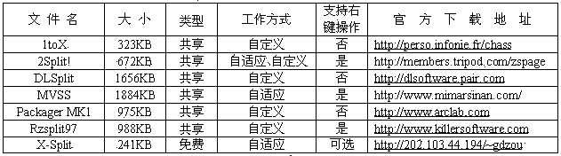
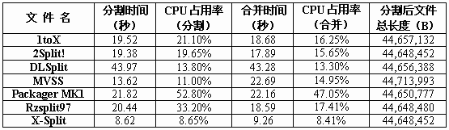
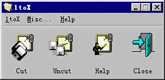
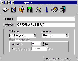
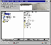
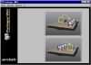
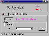

|
|
| 当前位置：电脑报电子版 > 1999 年 > 41 期 > 评测与市场 > 共享软件系列评测报告之文件分割工具 |
| 《 共享软件系列评测报告之文件分割工具 》 |
| 尽管诸如“艾美加ZIP”等大容量驱动器已诞生几年了，但广大普通计算机用户用得最多的仍然是传统的3英寸、5英寸软驱。为了使软磁盘能容下更多的文件，我们经常先用压缩工具把文件压缩，然后再拷贝至软磁盘来转存文件，这当然是个好办法，但并不适用于大文件；尽管也可以用压缩软件WinZip等压缩工具对源文件进行分盘压缩，但出错几率很大。而文件分割软件以其使用方便、安全性较高，尤其适用于目前在网络上传送大文件等特点，仍然受到广大计算机爱好者的欢迎，因此有了我们的这次评测。经多方查找和筛选，最后决定对以下七款文件分割软件进行评测（见表一）：1toX 1.04、2Split! 1.0、DLSplit 2.0、MimarSinan Visual Split Studio 2000 6.0（简称MVSS）、Packager MK1 2.1a、Rzsplit97 2.6和X－Split 0.95。
评测环境 Intel Celeron 366（Socket 370）、精英 P6BXT－A＋、Quantum Fireball CR 8.4G、Samsung 1.44M、Taskinfo 98 1.51  
评测方式 为保证每个软件都有一个相对一样的运行环境，我们采取用PQ Magic划出一个独立的分区，并用Ghost克隆一个独立且干净的Windows 98系统。每次只安装运行一个软件，取得数据后即重装系统，作下一个软件的测试。被分割文件选取了一个mpg文件（44,648,452B）。主观上体验软件的界面友好程度、易用性等；客观上主要观察分割时的系统资源占有率、分割速度、合并速度；考虑到由于软驱速度太慢，会淡化各软件间的性能差异，因此选择了较大的文件直接在硬盘上进行操作，每个分割后文件大小以3英寸软盘容量为限；CPU占用率取运行时的瞬间最大值；运行时间选取点击“Start（开始）”起到分割完成这段时间（结果见表二），这两个值都取三次运行所得结果的平均值（每运行一次结束后便整理磁盘）。软件运行原理 文件分割从技术上讲并不复杂，可能是文件处理类最简单的一种，一般就是把待切割的文件按指定或计算出的每块容量，从头开始读入一块，写入文件，再读入一块，再写入文件……直到完成；连接的时候，建新文件，然后直接把每块陆续读入其中。这样处理后的文件总长度没有变化，可以用copy /b file.1＋file.2＋file.3＋…… file.all；也有一些在每块文件的结尾部分加上一些附加信息，如总共块数，文件名等，不能用copy/b来连接，这也是为什么以上7款参测软件分割后的文件总长度各有不同的缘故。 1tox 1.04 相当小巧的一款分割工具，主界面非常简洁、清爽（图1），第一印象感觉功能可能会很单调。在选择源文件之后才弹出选项菜单，细看其设定项却让我大吃一惊：允许设定保护密码、生成EXE文件引导合并、可压缩源文件（且不须调用系统默认压缩文件，我们观察到它使用了自带的动态链接库1toXZIP.DLL，不过不能自定义压缩比）、可以选择分割后文件的编号方式，甚至可以自行编辑源文件的备忘信息；使用标准的Windows Help帮助文件；自带反安装工具等等。可见开发者是下了相当的工夫。从测试结果看，它表现平平。我们还发现它分割完成后源文件并未释放，不能作某些诸如移动、删除等操作，而且帮助文件中有些字符显示有问题。 2Split! 1.0 风格上和1toX 1.04很相近（图2），是一个好用的文件分割工具，内建分割数值多达8种：360K、720K、1.2M、1.44M、2.88M、105M、120M和270M。做得比较有特色的地方有：不但能自适应软盘和自定义分割尺寸，还可以指定分割文件数量；并且提供标准型、EXE自解还原型和选择还原型三种分割文件类型设定功能，让你在还原所分割的文件时更容易更方便；具有快速开启文件总管和隐藏只剩标题列的功能，要用时只须轻点一下即可快速开启使用；自带搜索功能，在用户不能确定源文件位置时很有用。从评测数据上看，其性能指标与1toX 1.04相差极小。不过分割和合并有两个运行界面而没有集成在一起，使用上很不方便。安装时用户不能自定义路径，直接被放在C:\Program Files\2Split!\目录下，在追求个性和自由度的今天，多少会引起用户一定程度的反感。 八款分割工具中功能最为强悍，也是界面最不友好的一个（图3）。众多的功能和设置项使得它九个分页管理窗口大多显得杂乱、没有吸引力，仅有的几个图标也是重复、单调。内建720K、1.44M、2.88M三种分割数值。 在我们体验它强大的功能后，却又找回对它已失落的好感：除了文件分割、合并，还自带压缩和解压缩功能，高达九级压缩比调节，在最高情况下与Winzip不相上下，相信是采用了同一种算法；文件搜寻功能远远超过了Windows的Explorer；支持长文件名、CRC32校验、历史记录、加密、文件修复等等；可生成一个DOS下的合并拷贝批处理bat文件。 所有这一切都使得它更像一个常用文件管理工具集。功能的繁多造成运行的缓慢，其操作时间之长，把其它六个工具远远甩在了后面。 MimarSinan Visual Split Studio 2000 6.0 此次评测中块头最大的家伙，内建1M、1.38M、100M三种分割数值。它采用类似资源管理器的双窗口选择文件（图4），用操作精灵的方式一步一步引导用户完成文件分割；分割后生成一可执行文件（所以生成的文件总长度最大），合并时只须执行可执行文件即可自动完成文件合并，因此使用起来很方便。对于分割而言，运行时间和CPU占用率都非常低，合并时由于脱离运行环境，须重新分配资源，因此花费时间比较多。另外，它是所有参测软件中唯一一个支持在线升级的软件，这在因特网应用日益广泛的今天是非常明智和实用的做法。 Packager MK1 2.1a 用户界面简直可以用“完美”二字来形容，给我极好的第一印象（图5）。它以图示按钮的形式引导使用者分割文件，几乎没有什么说明性的文字，但所有操作一目了然，使用简单、方便，毫无拖泥带水之感；内建2.88MB、1.44MB、1.2MB、100MB等4种分割数值；允许对所操作文件进行检验、修复；提供两种语言安装选择（英语/德语）。非常遗憾的是，它在8款参测软件中表现并不理想：分割、合并时间尚在可以忍受的范围之内，但运行时的CPU占用率实在太高，竟然数倍于其它几款软件，看来原因是在分割时加入了校验信息，大量耗用了系统资源。 Rzsplit97 2.6, 一个没有花巧的软件，一个界面内完成所有操作；从界面到使用，都显得非常的中规中矩（图6）；内建360KB、1.2MB、1.44MB、100MB四种分割数值；最大支持分割4.2GB的超大文件，不过实用性并不大。它和Packager MK1 2.1a一样，它提供了一个“Verify”（验证）功能，用来验证文件分割/恢复的正确性。我们在测试中发现：在“Settings”菜单项中“Split”的有一个“Raw Split”选项，若选中该项，将在目标文件位置产生一批处理文件，只要执行该批处理文件，即使没有Rzsplit 97也能恢复原始文件。该批处理文件的主要内容为：“copy /b 被分割文件名（无后缀）.001＋被分割文件名.002＋被分割文件名.003＋…… 被分割文件名（带后缀）"。据称该分割工具还有一个独特的功能是可以同时分割多个文件，并能把它们串联在一起，我们尝试将两个MPG文件分割、串联，但播放时没有成功。 文件分割机 X－Split 0.95 参测中的唯一一款免费软件，也是唯一的国产软件，同时又是最为小巧的。它的使用界面清爽，功能一目了然（图7），内建360K、720K、1.2M、1.44M、2.88M五种分割数值。它的性能表现让我们感到惊诧不已，当然，还有自豪：分割、合并文件时间和CPU占用率全部名列第一，甚至在加上校验选项时也同样如此。有关于生成批处理文件、校验、右键支持等功能，用户都可以通过“选项”自行定义，方便有各种不同使用习惯的用户。同时我们在测试中还发现三个很具特色的地方：支持鼠标拖放，使用户用起来更为方便，不过如果它能像2split! 1.0做到隐藏后只剩标题列，不用占用桌面太大空间，那样会更好；不仅仅是将一个文件分割成小块并能将其合并，它还能将其它类型的文件合并（例如文本文件，Mr.Cool文件以及某些分割软件分割后的文件）；合并功能中有一个“还原本软件分割的文件”按钮，使用它可以很快速地完成文件合并。 功能显得单一但很专业，所有选项都是围绕文件分割来做的，是一款相当不错的文件分割工具。 总结： 这次参测的七款软件大多数表现很相近，也有着各自的优缺点，比如：DLSplit 2.0功能强大但运行时间太长，适合那些喜欢“一软多用”的用户；Packager MK1 2.1a界面美观但资源占用太多，追求应用之美的用户会很欣赏它；MVSS个头相对较大，但运行速度快且支持网络升级，讲求实效的用户不会放过它。而令我们感到欣慰的是，国产的X－Split 0.95以其快速、高效和系统资源占用低拔得头筹。虽然功能相对单一，但我们认为：尽管集成化已不单单是硬件产业的专利，目前软件集成也开始有大行其道之势。文件分割作为文件管理的一个组成部分，没有必要把它搞得过于庞大、复杂，它更应该是其它文件资源管理软件的集成对象（如Windows Commander已经做到这一点）。因此，仅仅针对于文件分割，X－Split 0.95将是我们的首选！ |
| 下载本期推荐软件 | 页 首 |
| 《电脑报》版权所有，电脑报网站编辑部设计制作发布 |
{kind=link}